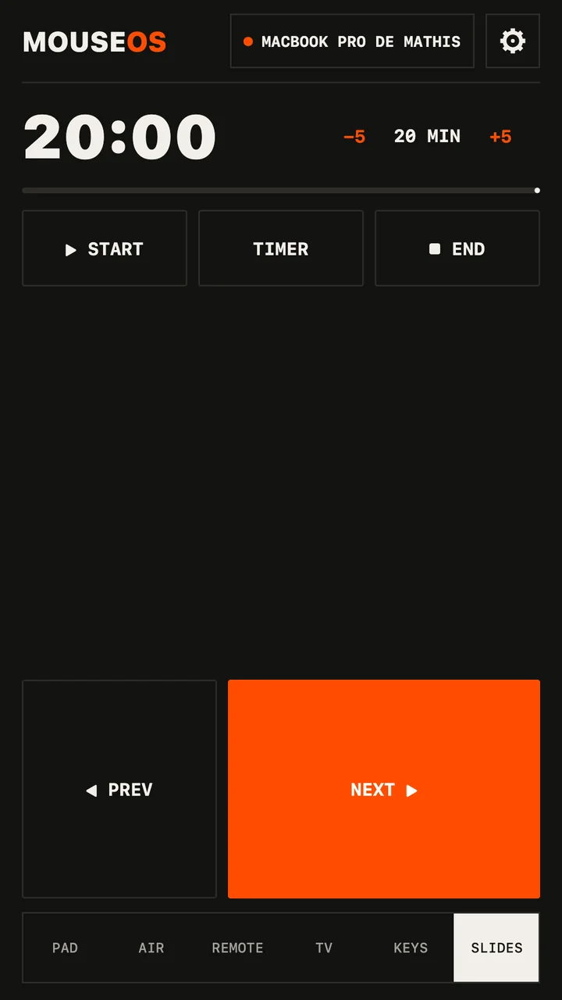
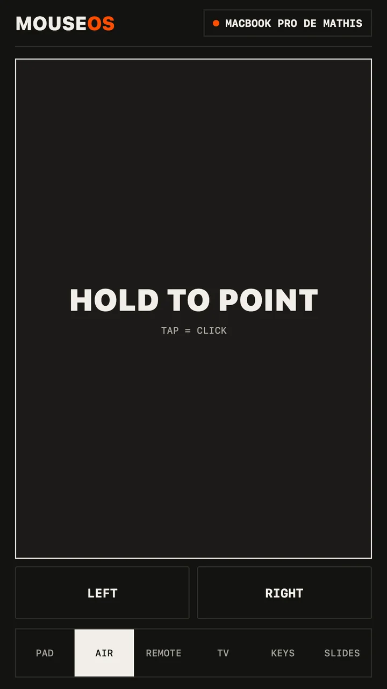

Guide · Talks & meetings
Your phone is a presentation clicker
The clicker is in the other bag. The batteries are dead. The USB dongle won't fit. You have your phone — that's enough.


What the Slides screen does
- Giant NEXT and PREV — big enough to hit without looking down.
- The volume buttons change slides (Android): phone in your pocket, thumb on the side.
- START knows the app in front: on a Mac it launches the slideshow in Keynote, PowerPoint, Google Slides or Preview with the right shortcut.
- BLACK blanks the screen when you want the room's eyes on you; END leaves the slideshow.
- A talk timer you set to the minute. It buzzes at 5 minutes, 1 minute and time-up — no need to glance at a clock.
- Need to point at something? Switch to Air and aim the phone at the screen.
Set it up before the talk
- Install the free MouseOS app on the laptop — Mac, Windows or Linux — and allow control once.
- Open MouseOS on the phone, on the same Wi‑Fi. Click ALLOW on the laptop. The phone remembers it.
- Open the deck, tap START.
Conference Wi‑Fi?
Venue and hotel networks often stop devices from seeing each other. The fix works anywhere: turn on your phone's hotspot and join it from the laptop. MouseOS needs no internet — the phone and the laptop talk directly.
Works with
Anything that moves with the arrow keys: Keynote, PowerPoint, Google Slides, LibreOffice Impress, PDF viewers, reveal.js and other web decks — on a Mac, a Windows PC or a Linux laptop.
More guides: phone as a mouse · phone as a TV remote · Linux & Wayland · MouseOS vs other remote apps